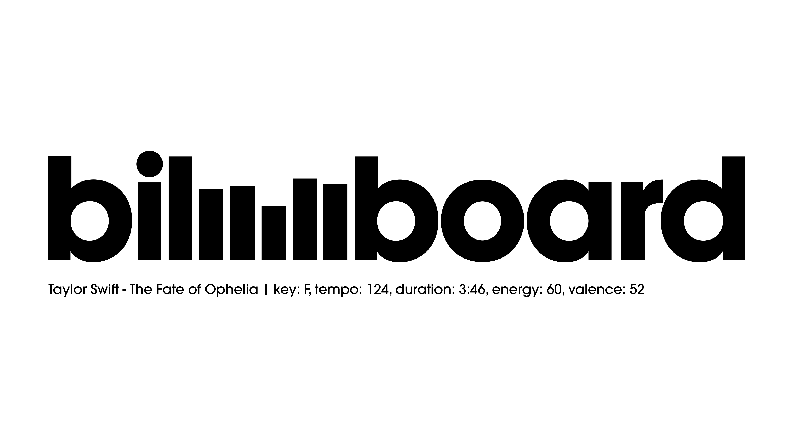
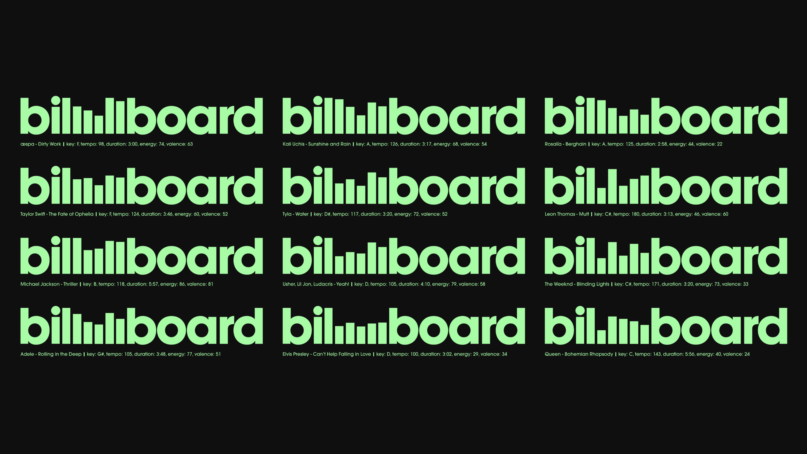

Fall 2025 | Designer, Creative Coder | Html, Css, Javascript, Figma

Billboard Magazine - Logo Redesign
This logo redesign utilizes track data fetched by the Spotify Audio Features / Track Analysis API to dynamically change the heights of the bars within the Billboard logo, based on 5 pieces of data: key signature, tempo, duration, energy, and valence.
 